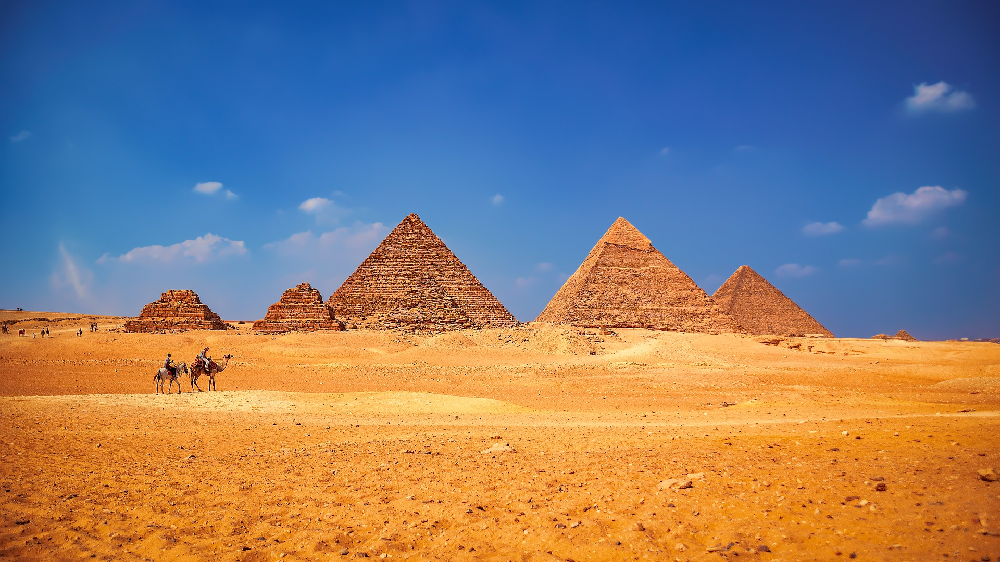

Geography
Africa is the world's second-largest and second-most populous continent, after Asia in both cases. At about
30.3 million km2 (11.7 million square miles) including adjacent islands, it covers 6% of Earth's total
surface area and 20% of its land area. With 1.3 billion people as of 2018, it accounts for about
16% of the world's human population. Africa's population is the youngest amongst all the continents;
the median age in 2012 was 19.7, when the worldwide median age was 30.4. Despite a wide range of natural
resources, Africa is the least wealthy continent per capita, in part due to geographic impediments,
legacies of European colonization in Africa and the Cold War,
predatory/neo-colonialistic activities by Western nations and China, and undemocratic rule and deleterious
policies. Despite this low concentration of wealth, recent economic expansion and the large and young
population make Africa an important economic market in the broader global context.
The continent is surrounded by the Mediterranean Sea to the north, the Isthmus of Suez and the Red Sea to
the northeast, the Indian Ocean to the southeast and the Atlantic Ocean to the west. The continent includes
Madagascar and various archipelagos. It contains 54 fully recognised sovereign states (countries), eight
territories and two de facto independent states with limited or no recognition. Algeria is Africa's largest
country by area, and Nigeria is its largest by population. African nations cooperate through the
establishment of the African Union, which is headquartered in Addis Ababa.
Africa straddles the equator and the prime meridian making it the only continent in the world to be situated
in all four cardinal hemispheres. It is the only continent to stretch from the northern temperate to
southern temperate zones. The majority of the continent and its countries are in the Northern
Hemisphere, with a substantial portion and number of countries in the Southern Hemisphere. Most of the
continent lies in the tropics, except for a large part of Western Sahara, Algeria, Libya and Egypt, the
northern tip of Mauritania, the entire territories of Morocco, Ceuta, Melilla, and Tunisia which in turn are
located above the tropic of Cancer, in the northern temperate zone. In the other extreme of the continent,
southern Namibia, southern Botswana, great parts of South Africa, the entire territories of Lesotho and
Eswatini and the southern tips of Mozambique and Madagascar are located below the tropic of Capricorn, in
the southern temperate zone.
Africa is home to much biodiversity; it is the continent with the largest number of megafauna species, as it
was least affected by the extinction of the Pleistocene megafauna. However, Africa also is heavily affected
by a wide range of environmental issues, including desertification, deforestation, water scarcity, and other
issues. These entrenched environmental concerns are expected to worsen as climate change impacts Africa. The
UN Intergovernmental Panel on Climate Change has identified Africa as the continent most vulnerable to
climate change.
The history of Africa is long, complex, and has often been under-appreciated by the global historical
community. Africa, particularly Eastern Africa, is widely accepted as the place of origin of humans and
the Hominidae clade (great apes). The earliest hominids and their ancestors have been dated to around 7
million years ago, including Sahelanthropus tchadensis, Australopithecus africanus, A. afarensis, Homo
erectus, H. habilis and H. ergaster— the earliest Homo sapiens (modern human) remains, found in Ethiopia,
South Africa, and Morocco, date to circa 200,000, 259,000, and 300,000 years ago respectively, and Homo
sapiens is believed to have originated in Africa around 350,000–260,000 years ago. Due
to being the longest inhabited continent, Africa is also considered by anthropologists to be the most
genetically diverse continent on the planet.
Early human civilizations, such as Ancient Egypt and Carthage emerged in North Africa. Following a
subsequent long and complex history of civilizations, migration and trade, Africa hosts a large diversity of
ethnicities, cultures and languages. The last 400 years have witnessed an increasing European influence on
the continent. Starting in the 16th century, this was driven by trade, including the Trans-Atlantic slave
trade, which created large African diaspora populations in the Americas. In the late 19th century, European
countries colonized almost all of Africa, extracting resources from the continent and exploiting local
communities; most present states in Africa emerged from a process of decolonisation in the 20th century.
history
Africa is considered to be the oldest inhabited territory on Earth, with the
Human species originating from the continent. During the mid-20th century, anthropologists discovered
many fossils and evidence of human occupation perhaps as early as 7 million years ago (BP=before present).
Fossil remains of several species of early apelike humans thought to have evolved into modern man, such as
Australopithecus afarensis (radiometrically dated to approximately 3.9–3.0 million years BP,
Paranthropus boisei (c. 2.3–1.4 million years BP) and Homo ergaster (c. 1.9 million–600,000 years BP)
have been discovered.
After the evolution of Homo sapiens approximately 350,000 to 260,000 years BP in Africa, the
continent was mainly populated by groups of hunter-gatherers. These first modern humans left Africa
and populated the rest of the globe during the Out of Africa II migration dated to approximately 50,000
years BP, exiting the continent either across Bab-el-Mandeb over the Red Sea, the Strait of
Gibraltar in Morocco, or the Isthmus of Suez in Egypt.
Other migrations of modern humans within the African continent have been dated to that time, with evidence
of early human settlement found in Southern Africa, Southeast Africa, North Africa, and the Sahara.
Climate
The climate of Africa ranges from tropical to subarctic on its highest peaks. Its northern half is primarily
desert, or arid, while its central and southern areas contain both savanna plains and dense jungle
(rainforest) regions. In between, there is a convergence, where vegetation patterns such as sahel and steppe
dominate. Africa is the hottest continent on Earth and 60% of the entire land surface consists of drylands
and deserts. The record for the highest-ever recorded temperature, in Libya in 1922 (58 °C (136 °F)),
was discredited in 2013..
Languages
By most estimates, well over a thousand languages (UNESCO has estimated around two
thousand) are spoken in
Africa. Most are of African origin, though some are of European or Asian origin. Africa is the most
multilingual continent in the world, and it is not rare for individuals to fluently speak not only multiple
African languages, but one or more European ones as well. There are four major language families indigenous
to Africa:
A simplistic view of language families spoken in Africa
The Afroasiatic languages are a language family of about 240 languages and 285 million people widespread
throughout the Horn of Africa, North Africa, the Sahel, and Southwest Asia.
The Nilo-Saharan language family consists of more than a hundred languages spoken by 30 million people.
Nilo-Saharan languages are spoken by ethnic groups in Chad, Ethiopia, Kenya, Nigeria, Sudan, South Sudan,
Uganda, and northern Tanzania.
The Niger-Congo language family covers much of Sub-Saharan Africa. In terms of number of languages, it is
the largest language family in Africa and perhaps one of the largest in the world.
The Khoisan languages number about fifty and are spoken in Southern Africa by approximately 400,000
people. Many of the Khoisan languages are endangered. The Khoi and San peoples are considered the
original inhabitants of this part of Africa.
Following the end of colonialism, nearly all African countries adopted official languages that originated
outside the continent, although several countries also granted legal recognition to indigenous languages
(such as Swahili, Yoruba, Igbo and Hausa). In numerous countries, English and French (see African French)
are used for communication in the public sphere such as government, commerce, education and the media.
Arabic, Portuguese, Afrikaans and Spanish are examples of languages that trace their origin to outside of
Africa, and that are used by millions of Africans today, both in the public and private spheres. Italian is
spoken by some in former Italian colonies in Africa. German is spoken in Namibia, as it was a former German
protectorate.
Facts
The African continent has approximately 3,000 distinct
ethnic groups while Nigeria alone has about 370
of
these
tribes that have been officially recognized.
Africa also boasts of having the longest river in the world
which is the Nile that runs for around
4,150
miles
before it meets the ocean. It flows through several
African countries such as Ethiopia, Sudan,
Uganda
as well as
Egypt thus making the land extremely fertile.
The largest waterfall in Africa is the Victoria Falls and it is
located on the Zimbabwe and Zambia
border.
It
has a height of 355 feet and the width of
the water fall runs into almost a mile.